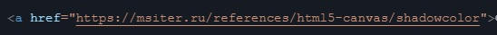
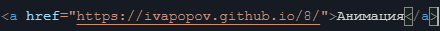
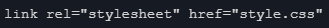

Чтобы добавить ссылку на сайт, нужно вести внутри body код:
А чтобы её озаглавить, нужно написать следующее:
Чтобы добавить изображене в сайт, нужно вести внутри body код:
img scr ="изображение.png"
При работе в Github или Beget нужно загрузить скаченное изображение, а потом к нему писать этот код в сайте
Чтобы подключить сайт к CSS, нужно писать следуйщий код:
И код для подключения сайта к JS:
Пока что нету!Для работы нужно добавить index.js, после чего там рисовать.
Вот список кодов для Canvas:
shadowColor
code>var c=document.getElementById("myCanvas");
var ctx=c.getContext("2d");
ctx.shadowBlur=20;
ctx.shadowColor="black";
ctx.fillStyle="red";
ctx.fillRect(20,20,100,80);
stroke
var c=document.getElementById("myCanvas");
var ctx=c.getContext("2d");
ctx.beginPath();
ctx.moveTo(20,20);
ctx.lineTo(20,100);
ctx.lineTo(70,100);
ctx.strokeStyle="red";
ctx.stroke();
Остальные коды можете найти тут:
Список всех кодов для Canvas.